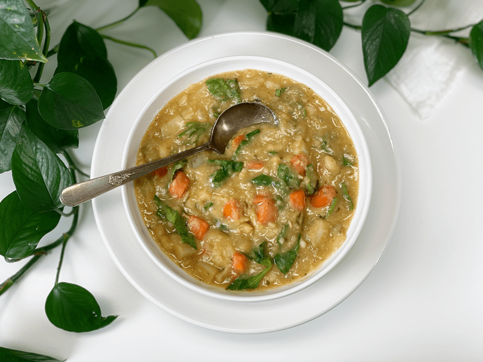
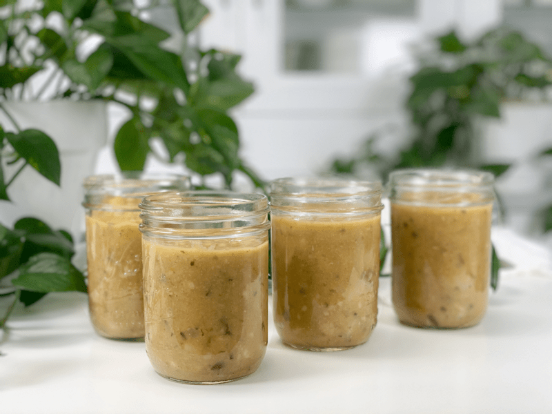

White Bean and Spinach Soup | Oil-Free
Creamy, hearty, chunky, satiating, nutritious and delicious…that sums up this soup. To me, there is something therapeutic about homemade soup as I pull together ingredients focusing on flavors, textures, and spices. And let’s face it, soup is just a vehicle for all things veggie! We should always be conscious of food waste, and even more so now since most of us are locked down in our homes. It’s even more important to make the best of what we have. A warm pot of soup can be a great way to use up leftovers in the fridge. It stretches our food, our dollar, and waistband ( just teasing about that one).

White Bean and Spinach Soup warmed my soul and happily filled my belly this afternoon. I had spent the morning shopping for groceries COVID-19 style (to last us 4 weeks) and by the time I got home, I was mentally tuckered out and a bit chilled. As I was putting the groceries away, I unconsciously started cleaning the fridge out. What? Who unconsciously cleans their fridge? Me.
I kept moving a container of beans to better organize my fridge. After moving them about five times, I decided I should just do something with them. A few days back I made some Northern beans in the Instant Pot. I had been enjoying them as-is, but I decided it was time to do something more with them before they went bad. No food waste is happening on my watch.
How to Serve White Bean and Spinach Soup
- Serve as-is, chunky, with the beans, potatoes, carrots, and onions whole and left intact.
- Puree half of the soup to achieve a slightly more silky texture by placing half of the soup mix in the blender, then mixing it back to the pot. Or you can use an immersion blender if you have one.
- If you love a silky, creamy texture you can puree the entire soup.
Batch Cooking
This recipe creates 8 cups of soup. This may be enough to feed your family for one dinner but if you live alone, or perhaps it’s just you and one other, this soup can be frozen and enjoyed at a later date. In our house, it’s just Bob and me, so I will freeze half and put the other half in the fridge to warm up for our next lunch or dinner. It’s a good idea to freeze the soup in single-serving containers because if you thaw a large amount and don’t eat it, you can’t re-freeze it.

How to Deglaze a Pot or Pan
You might be wondering why I am bringing this topic up now. Well, if you’re like me and get distracted every once in a while…you might find yourself with a sticky bottom. Oh dear, that came out wrong. What I meant is that sometimes food sticks to the bottom of the pan,–it doesn’t quite burn, just sticks.
Deglazing is simply the act of adding liquid to a hot pan, which dissolves the browned food residue that sticks to the base. Often, the technique is used to further enhance the flavor sauces, soups, and gravies but today, I am doing it just to clean the pot. You see, we had a freak hail storm that caused me to leave my soup pot unattended. While I was oohing and aaahing over the fierce act of Mother Nature…some of my soup stuck to the base of the pan. Thankfully, it didn’t burn. Deglazing takes the elbow work out of cleaning a sticky bottom.
It’s a simple technique. After emptying out the contents of the pan, add about one inch of water to the pan and return it to the heat. Let it come to a gentle boil as you scrape the bottom of the pan with a non-scratching spatula to get all of those sticky bits up. Easy peasy (see photos down below).
Make Every Bite Count
- Add kombu to the pot while the soup is cooking. It is a type of sea kelp rich in vitamins and minerals, including potassium, calcium, and iodine. Not to worry, its taste is very mild and won’t affect the taste of the soup. Another perk–it is high in vitamins A, C, E, B1, B2, B6, and B12.
- Use organic ingredients if possible. If nothing else, at least purchase organic potatoes! According to the USDA’s Pesticide Data Program, 35 different pesticides have been found on conventional potatoes. Of these, 6 are known or probable carcinogens, 12 are suspected hormone disruptors, 7 are neurotoxins, and 6 are developmental or reproductive toxins.
- If using organic potatoes, keep the skins on for added nutrients.
- When we are facing turbulent times, it is easy to get caught up in fear and negativity. I encourage you to work on turning your thoughts and words around. Fear weakens our immune systems, which makes us more susceptible to dis-ease. If this is a tough habit for you to break, use your mealtimes as a time to reflex on the blessings you have. It doesn’t matter how small or insignificant they may seem, it’s a start!
I hope you enjoy this recipe. Please leave a comment below and have a blessed day, amie sue
 Ingredients
Ingredients
Yields 8 cups
- 4 cups white beans, cooked
- 2 cups vegetable broth
- 2 1/2 cups diced potato
- 1 1/2 cups diced carrot
- 1 cup chopped onion
- 1 strip kombu seaweed
Spices
- 2 cloves garlic, minced
- 1 1/2 tsp sea salt
- 1 tsp dried marjoram
- 1/2 tsp ground paprika
- 1/2 tsp dried thyme
- Pinch cayenne pepper
- Pinch ground allspice
- 1 bay leaf
Add towards= the end of cooking
- 2+ cups spinach, rough chopped
- 1 Tbsp nutritional yeast flakes
Preparation
- In a medium-sized stockpot, combine the beans, veggie broth, potato, carrots, onion, and kombu seaweed.
- I used a combination of cannellini and Great Northern beans.
- If using organic potatoes, I recommend keeping the skins on.
- Add the garlic, salt, marjoram, paprika, thyme, cayenne, allspice, and bay leaf. Give everything a good stir.
- Bring to a boil, cover, and reduce to simmer for up to 60 minutes or until desired thickness is reached.
- The cooking time will vary based on the size of your diced vegetables.
- When the soup is done cooking, turn off the heat, remove the bay leaf and kombu seaweed. Add the chopped spinach and nutritional yeast. Taste test and adjust the seasoning if needed.
- Spinach should always be added at the end of cooking, since it is delicate.
- IF you have family members who are turned off by the idea of the spinach in their soup, add a small amount to each serving bowl when serving the soup. The heat of the soup will wilt it enough.
- When you remove the kombu seaweed you can save it for the next pot of soup, beans, or grains that you cook, or you can finely chop it and add it back to the soup (which is what I did). Nobody will detect it…our little secret.
Storing Soup
Fridge
- When it comes to storing hot foods in the fridge, we have a 2-hour window. Large amounts of food should be divided into small portions and put in shallow containers for quicker cooling in the refrigerator that is set to 40 degrees (F) or below. If you leave food out to cool and forget about it after 2 hours, throw it away due to the growth of bacteria. (source)
- It should keep well for at least 4 or 5 days.
Freezer
- Place the soup in freezer-safe jars. Label and date each jar.
- Be sure to leave about an inch of room in the jar to account for expansion when the liquid freezes.
- The soup can be stored for up to 3 months or longer.
© AmieSue.com